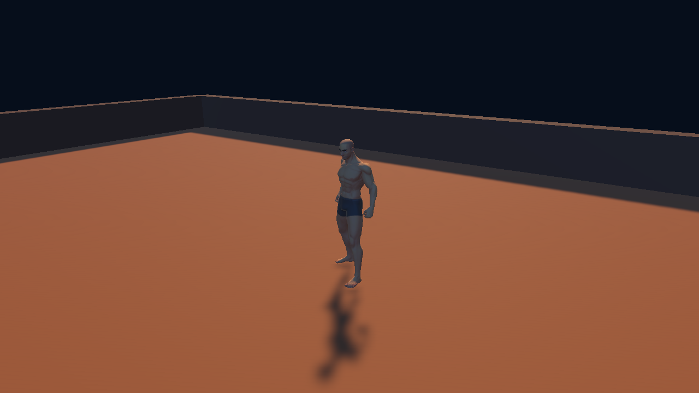

Actual frames from the standalone Unity preview. An adult humanoid follows two authored goals, walks around the obstacle and delivers a crystal. This is a recorded scripted demonstration. It contains no learned behavior. The wider Starfall landscape is a separate milestone.

Captured every six simulation frames; replayed at five frames per second. Timing is simulation time, not a native performance benchmark. Inspect the runtime checks.
| Step | Observation | Action | Outcome |
|---|---|---|---|
| 1 | Authored destination; collision queries found 4 blocked grid cells. | Search a bounded one-metre grid. | Route contains 12 clear steps; no learning involved. |
| 2 | Reached the authored interaction stand; range checked. | Play the free Interact clip. | Interaction in progress. |
| 3 | Crystal still present at the source stand. | Attach the crystal to the right hand. | Carrying one crystal. |
| 4 | Authored destination; collision queries found 5 blocked grid cells. | Search a bounded one-metre grid. | Route contains 7 clear steps; no learning involved. |
| 5 | Reached the authored interaction stand; range checked. | Play the free Interact clip. | Interaction in progress. |
| 6 | Carried crystal and destination are within reach. | Place the crystal on the destination. | Source empty; destination occupied. Expedition complete. |